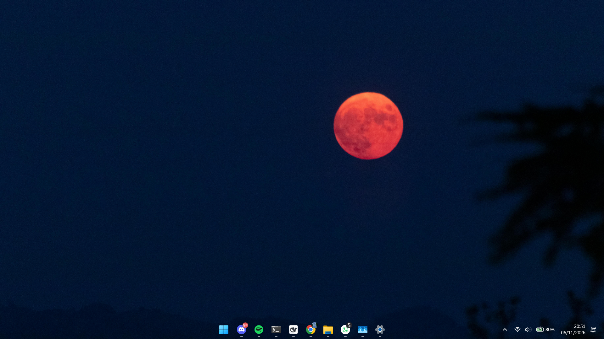
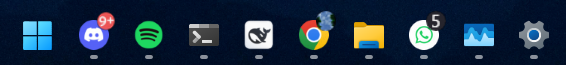
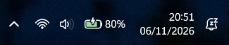
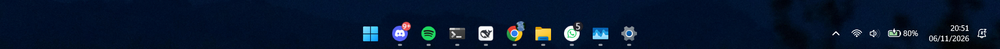
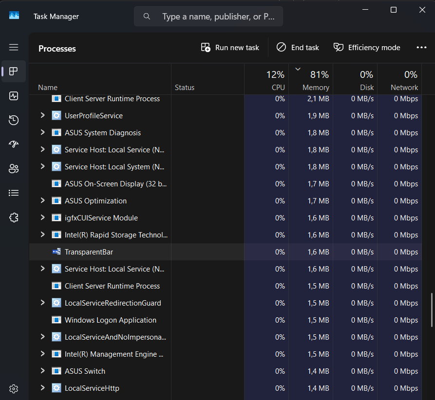
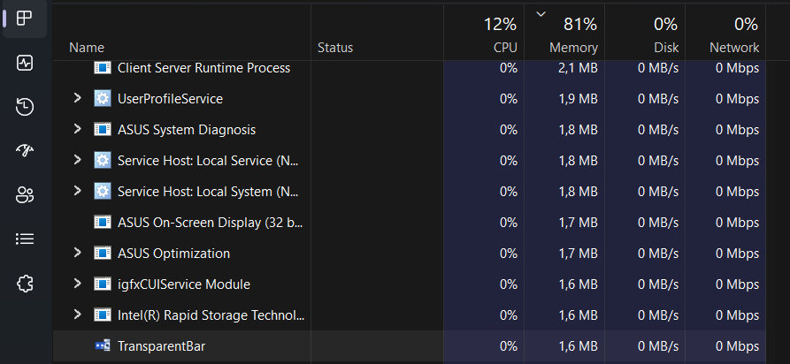

Startup?Your call.
Off by default.
Turn it on from the tray.
TransparentBar
 Run at sign-in
Run at sign-inOffOn
Turn it on. Turn it off.
Wallpaper visible.
Apps stay in place.

Actual Windows 11 desktop capture.


Same taskbar. Clear background.

No webview.
No account.
No telemetry.
One job. A transparent taskbar.
Off by default.
Turn it on from the tray.
Run at sign-inTurn it on. Turn it off.
Host process memory at capture time.


A snapshot, not a limit.
Explorer bridge memory excluded.
Windows installer
setup.exeInstall for your account.

Extract. Run.
For Windows 10 / 11 · x64
Your wallpaper, uninterrupted.
Download free on GitHubgithub.com/Raflyf/TransparentBar
Open source · MIT
Music: “Neon” — Scott Buckley · CC BY 4.0
www.scottbuckley.com.au · edited excerpt